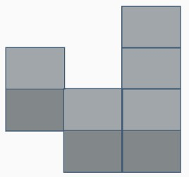
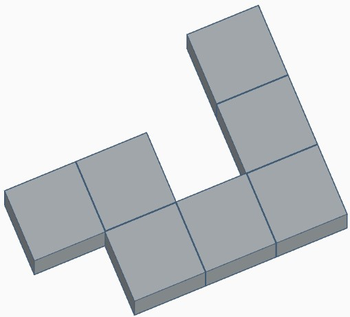
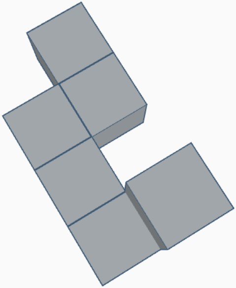

Turpmāk uzdevumu noteikumi paliks nemainīgi.
Kad sāksi uzdevuma izpildi, zemāk Tu redzēsi figūru un 3 iespējamos atbilžu variantus, tāpat kā
iepriekš. Tavs uzdevums ir pēc iespējas ātrāk atrast to attēlu, kur ir redzama citādāk pagriezta
dotā figūra, un uz tastatūras nospiest attēlam atbilstošo ciparu.
Lai sāktu pildīt uzdevumu, nospied atstarpes taustiņu.
1
2
3
